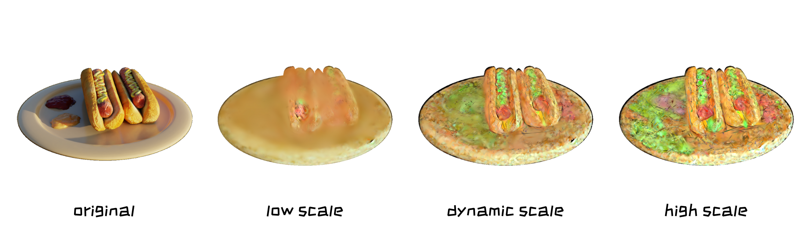

Ablation: DSSD
Ablation on DSSD (Dynamic Style Score Distillation)


Recent research in 2D image stylization has shifted from traditional approaches based on universally pre-trained VGG networks or adversarial learning paradigms to diffusion models, which facilitate progressive and fine-grained style infusion. Nevertheless, the advancement has been merely explored for 3D stylization. In this paper, we introduce a comprehensive Gaussian Splatting (GS) stylization framework that facilitates style transfer from a customized reference image to a random 3D model. In general, we distill style scores of a pre-trained specialized diffusion model into GS optimization through an adaptive dynamic schedule. Specifically, we begin by embedding the style of a customized reference into the front view using the image stylization diffusion model. To ensure geometric consistency, the stylization adjustments of the front view are propagated to fixed perspectives using a multiview diffusion model guided by the reference image. Furthermore, we introduce a straightforward yet effective score distillation strategy, termed style outpainting, to progressively supplement the remaining views without ground truth supervisions. Additionally, we find that eliminating outlier Gaussians with excessively high gradients can effectively reduce the risk of stylization failure. We conduct extensive experiments on a collection of style references (i.e., artistic paintings and customized designs) and 3D models to validate our framework. Comprehensive visualizations and quantitative analyses demonstrate our superiority in achieving high-fidelity, geometry-consistent GS stylization compared to previous methods.
Overview of our pipeline for 3D stylization with three modules:
(a) Multi-view Style Enhancement: Style information is extracted from reference images, with Style Cleaning refining the style representation and Style Injection integrating it across multiple views to ensure geometric consistency.
(b) Dynamic Style Score Distillation (DSSD): This module employs dynamic noise scheduling and adaptive style guidance, integrating both latent and pixel losses to achieve consistent stylization step by step.
(c) Progressive Style Outpainting (PSO): Progressive outpainting achieves multi-view style propagation. While Gaussian Refinement (e.g., scale regularization and high-gradient Gaussian culling) is simultaneously conducted during the distillation process, it enhances the final stylized 3D representation, particularly in art scenes.

Multi-view Style Enhancement:
(a) Style Cleaning: Isolates pure style information by removing content elements and enhancing style features.
(b) Style Injection: Integrates this refined style across multiple views, ensuring consistent and geometry-preserving 3D style enhancement.

Visual Results: This figure demonstrates the performance of our method across six distinct styles: Sky Painting, Cartoon, Drawing, Fire, Cloud, and Black Myth (Wukong), applied to three 3D objects: Chair, Hotdog, and Mic.
These results highlight the model's capability to handle two main categories of styles:
Our method demonstrates versatility in stylizing 3D models while preserving both style fidelity and geometric consistency. For example:
These features are effectively preserved, ensuring high-quality results across diverse artistic and physical characteristics.
Qualitative Comparisons: We compare our method against other state-of-the-art (SOTA) approaches: StyleGaussian (Liu et al., 2024), IGS2GS (IGS2GS Reference), and Ref-NPR (Zhang et al., 2023) on three datasets (Chair, Hotdog, and Mic) using three styles: Cartoon, Sky Painting, and Fire.
The horizontal axis represents the compared methods, while the vertical axis displays different datasets. Our method effectively preserves the original model details, including:
Compared to other methods, our approach demonstrates stronger semantic understanding, clearly distinguishing key elements such as the sausage, bun, and plate on the Hotdog. This results in more stable and visually coherent stylizations.
Quantitative comparison with competing methods demonstrates the superiority of our approach.
Ablation on DSSD (Dynamic Style Score Distillation)

Ablation on PSO (Progressive Style Outpainting)
Ablation on Gaussian Refinement
Below are some related works that were introduced around the same time as ours.
StyleGaussian: Instant 3D Style Transfer with Gaussian Splatting (Liu et al., 2024) introduces an approach for fast 3D style transfer using Gaussian splatting techniques.
Instruct-GS2GS: Editing 3D Gaussian Splats with Instructions (Vachha & Haque, 2024) presents a framework for editing 3D Gaussian splats through natural language instructions.
Styleshot: A Snapshot on Any Style (Gao et al., 2024) explores the ability to apply arbitrary styles to 3D objects using a snapshot-based approach.
Ip-adapter: Text Compatible Image Prompt Adapter for Text-to-Image Diffusion Models (Ye et al., 2023) introduces an image prompt adapter for enhancing text-to-image models.
Instantstyle: Free Lunch Towards Style-Preserving in Text-to-Image Generation (Wang et al., 2024) proposes a method for maintaining style consistency in text-to-image generation.
3D Gaussian Splatting for Real-Time Radiance Field Rendering (Kerbl et al., 2023) investigates real-time rendering techniques for 3D Gaussian splatting in radiance fields.